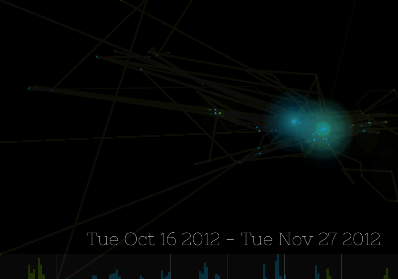

EveryWeek
A Sonic and Visual Experience of a Week
Use Google Latitude to start, check out the Demo, or read more
There Is No Data
Google Latitude has no location history for you. Try the demo instead?


EveryWeek
See and Listen to your weekly habits. Log in using Google Latitude to see the patterns of places you go with the patterns of when you're active.

Hints - Circles expand around places you often visit. Lines form across places you move. Past weeks are overlayed behind the current week. The bottom bar shows an aggregate of how active you are per hour per week. The ocean noise corresponds to the time of day, the synth pitch is a function of the current week, and the position on the screen. Read More
Built with Processing,
Processing.js,
and Audiolet.js
Works best in the latest versions of Chrome and Firefox. IE doesn't work prior to IE 10.
Written by RJ Marsan with help from Jessica Metro